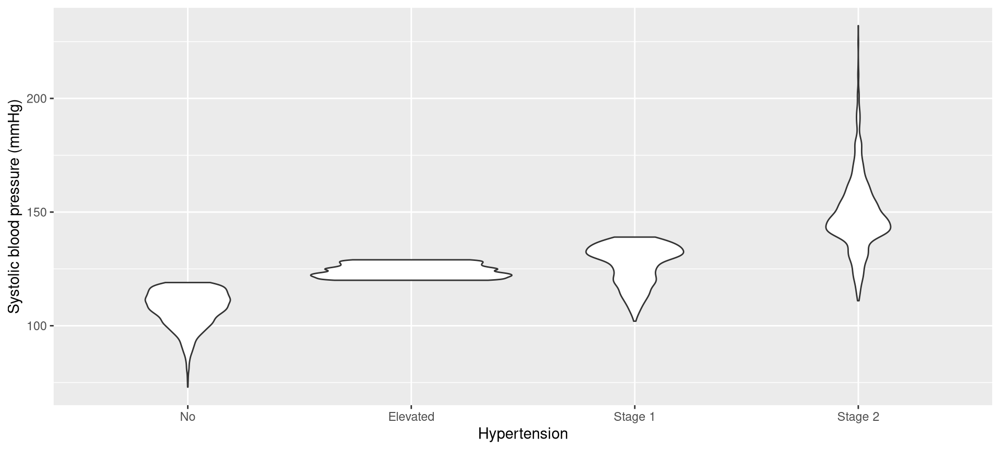
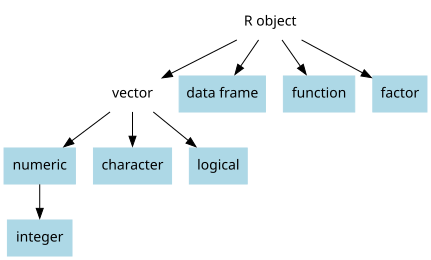
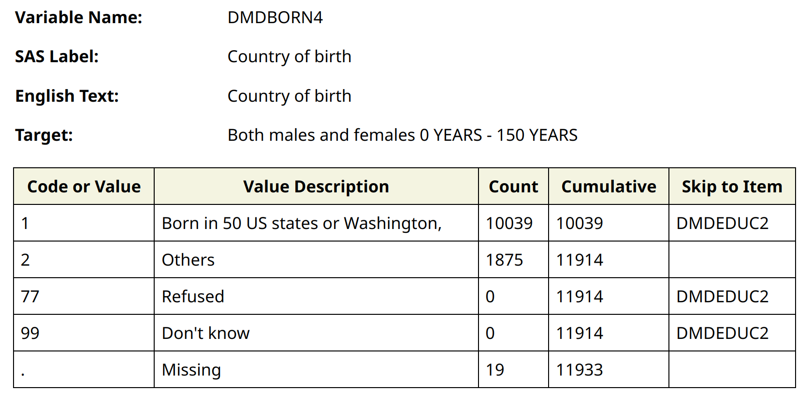
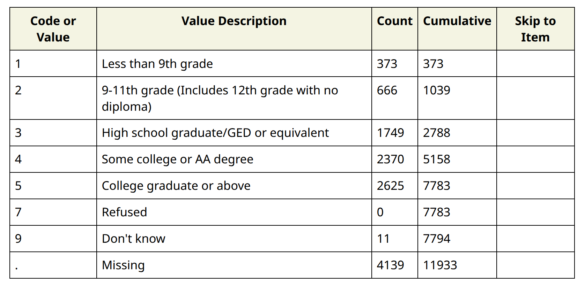

table(nhanes$hypertension)
#|
#| Elevated No Stage 1 Stage 2
#| 841 2657 1409 1216Session 7: How can I create new categorical variable?
A Slower Introduction to R
Yea-Hung Chen, PhD, MS
UCSF Library
Thursday, November 20, 2025
Reordering groups
Hypertension

Hypertension
Hypertension
- groups in character variables are always presented in alphabetical order
Hypertension
- to specify the desired order of the groups, convert the object type to a factor:
- there are two arguments to
factor()here:nhanes$hypertension: the original variablec('No',...): the groups listed in the desired order
- it is not necessary to type the argument name
Hypertension

Hypertension
Factors
Factors

Free text versus multiple choice
- free text: Please tell me, in as few or as many words as you like, how much or how little you liked this ice cream.
- multiple choice: How much did you like this ice cream? Select just one of the following.
- I hated it
- I disliked it
- It was OK
- I liked it
- I loved it
- I hated it
Character versus factor
- free text → character
- multiple choice → factor
Character versus factor
| best for these data | possible values | groups can be ordered | |
|---|---|---|---|
| character | free text | many | no |
| factor | multiple choice | limited | yes |
Factor levels
- factor groups are known as levels
Factors in regression models
- if a factor is used as an x variable, the first group is the reference
- in logistic regression, if a factor is used as a y variable, the second group is used as the “yes” outcome
Exercise 1
Exercise 1
At the top of a new script, include code for importing the data. Run your code.
table()the cholesterol variable (cholesterol). Which group is listed first? Check the object type. What is the object type?
Exercise 1
- Use
factor()to re-order the groups incholesterolso that they are in the following order:Desirable,Borderline high, andHigh. You can create a new variable (such ascholesterol_factor) or overwrite the existingcholesterolvariable. Check your work. Verify that the groups are listed in the desired order intable().
Labeling groups
Country of birth
Country of birth
- from NHANES:

Country of birth
- to label the groups, convert the variable to a factor and include the
labelsargument:
- the order of the groups in
levelsandlabelsmust match
Country of birth
- alternatively, use the
base_match()function inbaseverse:
- the second argument lists the value–label mappings in a
'label'=valueformat base_match()will honor the order of the groups
Country of birth
base_match()orders the groups in the order specified in the second argument
Country of birth
- to check the work, use
table():
Education
Education
- from NHANES:

Education
- to collapse groups and label them, use
base_match()and list the groups more than once:
Education
- to check the work, use
table():
Exercise 2
Exercise 2
- Add code for loading
baseverseto the top of your script. Run your code.
Exercise 2
- Use
base_match()to create a labeled version of the original gender variable (riagendr). Name the new variablegender_base. Values of 1 represent males and values of 2 represent females. List the male group first. Check your work. Verify that the groups are listed in the desired order intable().
Exercise 2
- Use
base_match()to create a labeled version of race/ethnicity (ridreth3). You can call this variableraceorrace_ethnicityor whatever else makes sense to you. You may list the groups in whatever order you like. The NHANES documentation forridreth3is available here. Check your work. Verify that the groups are listed in the desired order intable().
Exercise 2
Add code for loading
dplyrto the top of your script. Run your code.Use
case_match(), fromdplyr, to create another labeled version of the original gender variable (riagendr). Name the new variablegender_dplyr. Again, list the male group first.case_match()works similarly tobase_match(), except the value–label mappings should be listed in avalue ~ 'label'format.
Exercise 2
table()thegender_basevariable. Check the class of the variable. What do you notice about the order of the groups and the object class?table()thegender_dplyrvariable. Check the class of the variable. What do you notice about the order of the groups and the object class?
Categorizing continuous variables
Total cholesterol
lbxtc< 200 mg/dL → desirable- 200 ≤
lbxtc< 240 mg/dL → borderline high lbxtc≥ 240 mg/dL → high
Total cholesterol
- to categorize total cholesterol, use
base_when():
- each argument of
base_when()is a rule–label mapping in alabel=rule format base_when()will honor the order of the groups
Total cholesterol
- to omit dollar-sign notation, use
with():
Total cholesterol
- to check the work, use
sum()andtable():
Exercise 3
Exercise 3
- Use
base_when()to define a variable for age group, with the following groups: 18–34, 35–54, and ≥ 55. The original age variable isridageyr. Name the variableage3_base. Use the following labels:Youngest,Middle, andOldest, and list the groups in that order. Check your work. Verify that the groups are listed in the desired order intable().
Exercise 3
- Copy and paste code from Session 6 for defining minutes of vigorous physical activity, with the
NAvalues properly encoded. Now, usebase_when()to define a categorical physical-activity variable with the following groups: less than 60 minutes, 60 minutes to less than 120 minutes, and 120 minutes or more. List the groups in order from fewer minutes to more minutes. Check your work. Verify that the groups are listed in the desired order intable().
Exercise 3
- Use
case_when(), from thedplyr, to create another variable for age group, with the following groups: 18–34, 35–54, and ≥ 55. The original age variable isridageyr. Name the variableage3_dplyr. Use the following labels:Youngest,Middle, andOldest, and list the groups in that order.case_when()works similarly tobase_when(), except the rule–label mappings should be listed in a rule ~'label'format.
Exercise 3
table()theage3_basevariable. Check the class of the variable. What do you notice about the order of the groups and the object class?table()theage3_dplyrvariable. Check the class of the variable. What do you notice about the order of the groups and the object class?
Beyond today
Other workshops I teach
- something on Quarto: possibly in Winter quarter
- Quarto is a very popular tool for generating reports, slide decks (such as this one), and websites
- Data Manipulation in R: in Winter or Spring quarter
- includes an introduction to
dplyrand the tidyverse way of doing things - includes base-R and
dplyrsolutions - covers techniques for merging data and reshaping data
- includes an introduction to
Other topics you might pursue
- mapping and GIS
- interactive data visualizations
- Shiny: a tool for creative interactive websites
Other topics you might pursue
- multiple imputation and other approaches for dealing with missing data
- packages for survey analysis
Other topics you might pursue
- bracket notation (indexing): a base-R technique for subsetting data and manipulating data
- repetition:
for()loops, the apply functions, and other tools - writing your own functions
- regular expressions: for searching through text and replacing text
- packages for parallel computing